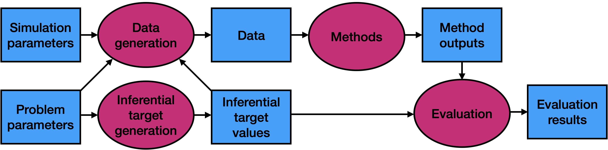

Introduction to simulatr
simulatr.RmdThe conceptual structure of a numerical simulation
The goal of a numerical simulation is to evaluate the performance of one or more statistical methods on data generated from one or more data-generating distributions.
Problem parameters and inferential targets. Each data-generating distribution is indexed by a number of problem parameters, e.g. the sample size or dimension of the problem, collectively called a problem setting. The problem parameters give rise to ground truth values of inferential targets, e.g. coefficients in a regression. The mapping between problem parameters and ground truth inferential target values, inferential target generation, may be either deterministic or randomized.
Data generation. The problem parameters and inferential target values give rise to a data-generating distribution. These, together with simulation parameters (e.g. the number of Monte Carlo realizations
Bto generate) are plugged into the data generation function to get data realizations for each data-generating distribution.Method application. Each of the methods functions is applied to each realization of each data-generating distribution to give a number of method outputs. These outputs should include values for each inferential target (e.g. coefficient estimates).
Method evaluation. Then, one or more evaluation functions take as input the ground truth inferential target values and method outputs and compute some metric of inferential accuracy (e.g. root-mean-squared error). These evaluation results for each method and each problem setting, averaged over
BMonte Carlo realizations, are the final output of the simulation study.

simulatr specifier objects
In simulatr, the aforementioned components are all
captured by a simulatr specifier object. This
object has five fields, which are described below:
-
parameter_grid: A data frame whose rows correspond to problem settings and whose columns are problem parameters. Additionally, theparameter_gridcontains a special column calledground_truth, which contains an object of ground truth inferential target values for each problem setting (implemented as a list-column). -
fixed_parameters: An object whose fields are either simulation parameters or problem parameters common to all problem setting. This object must contain at least the fieldsB, the number of data realizations to generate per problem setting, andseed, the seed to set prior to the generation of data for each problem setting and prior to the application of each method. -
generate_data_function: A function that takes as input the problem parameters and ground truth inferential target values and outputs either (1) one data set or (2)Bdata sets. The latter option is useful in cases where all data sets are faster to generate together rather than one at a time. -
run_method_functions: A named list of method functions. A method function takes as input either (1) one data set or (2)Bdata sets. In case (1), the function outputs an object that contains fields with names corresponding to the inferential targets. In case (2), the function outputs a data frame with two columns: one column namedrun_idcorresponding to the Monte Carlo replicate and one list-column namedoutputcontaining the objects outputted for each replicate. -
evaluation_functions: A named list of evaluation functions. An evaluation function takes as input two objects: the ground truth inferential targets and the outputs from a method function. It outputs the value of an evaluation metric.
simulatr workflow
Assemble simulation components. First, assemble the five objects described in the previous section.
-
Create a
simulatrspecifier object. Given the four simulation components, create asimulatrspecifier object using thesimulatr_specifier()function:simulatr_spec <- simulatr_specifier( parameter_grid, fixed_parameters, generate_data_function, run_method_functions, evaluation_functions ) -
Check and, if necessary, update the
simulatrspecifier object. Make sure that all parts of yoursimulatrspecifier object are working by running a small portion of your simulation via thecheck_simulatr_specifier_object()function. This function takes as arguments thesimulatrspecifier object (simulatr_spec) as well as the number of data realizations to try (B_in). For checking purposes, you can use a small number forB_inlike 2 or 3.check_results <- check_simulatr_specifier_object(simulatr_spec, B_in = 3)If there are any errors,
simulatrwill give informative error messages that will let you know which method and which parameter setting caused the problem, along with the corresponding data realization. Update thesimulatrspecifier object to fix any issues. Run the simulation. There are two options for running a numerical simulation with
simulatr. You can runsimulatreither (1) on your laptop, if your simulation is small or (2) on a distributed computing platform, if your simulation is large.Summarize and / or visualize the results. The
simulatroutput will give you the value of each evaluation metric on each method on each problem setting. You can then create tables or graphs of these results.